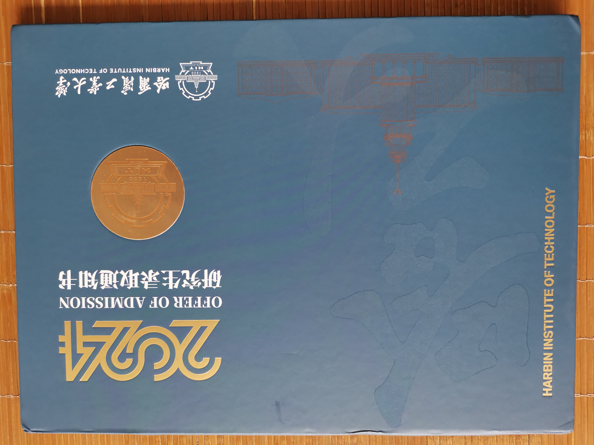
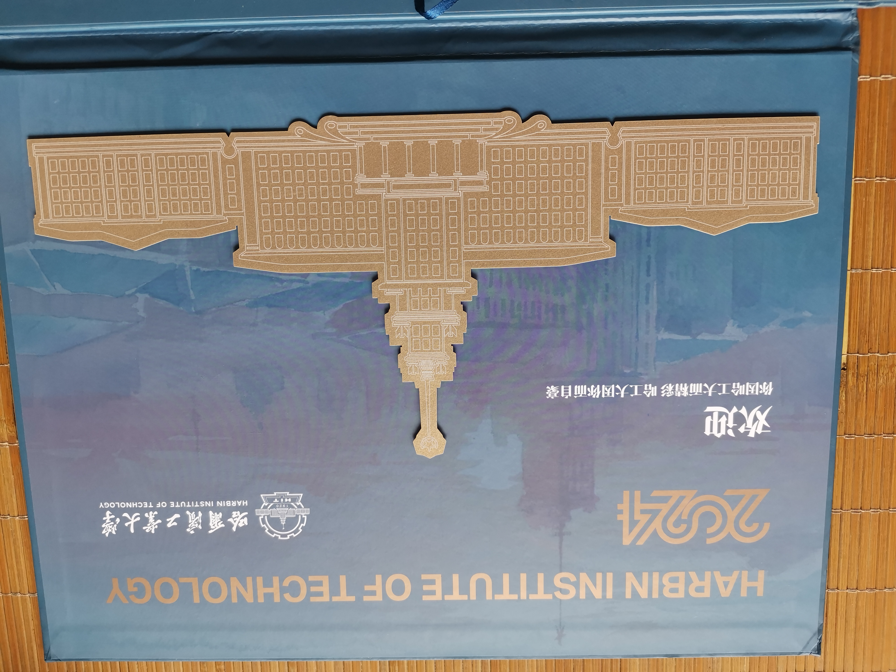

上岸
24考研二战上岸哈尔滨工业大学本部计算机专硕。
昨天收到了录取通知书，写篇文章记录下这段时间的经历。


时间线
先来捋下这两年的时间线
- 2022.03-2022.12准备考研初试
- 2023.02-2023.03准备考研复试
- 2023.06-2023.12二战初试
- 2024.02-2024.03二战复试
- 2024.04考研上岸

备考经历
一战
本科就读于一所天津的双非本科，考研的主要原因是有一个名校梦，同时在如今的就业市场上双非本的含金量越来越低，面对现实的无奈和有一颗不甘平凡的心，下定决心要考研，一战院校选择的是华中科技大学，因为很早就研究过计算机统考专业课408，所以按照408专业课，南方院校这几个筛选标签，同时参考往年情况（还有一个原因是有一个好朋友在华科），最后选择了华科。备考期间作息十分的规律
- 早上6点起床
- 7点左右先去教室
- 8点图书馆开门
- 22点回宿舍
一直这样持续到了12月底初试，梦回高三，只是考研更多的是一个人的狂欢，期间并没有感到特别苦，可能是因为已经经历过了河北的高考吧，一战初试成绩357，复试院线345，最终结果排名140，录取125人，一战以失败告终，计算机报考人数众多，调剂的话并不会有很好的结果，虽然报名时就想过这种结果，但当真的去面对时还是并没有完全准备好，那段时间有过失意、迷茫、尝试找工作的各种不顺利，想二战考研，但又怕再次失败，最后好友的一些鼓励给我了很多的勇气，思来想去，失败又如何，人生从来都不是一帆风顺，我最大的资本就是我还年轻啊。
二战
六月弄完本科毕业的事情后，回到家里，开启了我的第二次的备考之旅。
从夏天

到冬天

因为一些原因，在第二次择校时一志愿选择了哈尔滨工业大学深圳校区，从408统考专业课换到了自命题，第一次比较完整的学完了一本大黑书，传说中的”计算机圣经”CSAPP

这本书确实让我收获良多，不愧是”圣经”，很值得一读，不过就是太厚了！
最终结果初试364不是特别好，复试也很一般，最后深圳校区是去不成了，工大是一校三区，比较幸运的调到了本部，感谢工大捞我，两年考研画上了句号。
总结
人生是一场漫长的旅行，好的坏的都是风景，两年的时间经历了很多很多，有过失落，有过喜悦，很幸运有了一个不错的收获，感谢我的父母，感谢那些帮助我的人，还有那么多”素未谋面的恩师”。
开启人生的下一场旅行！